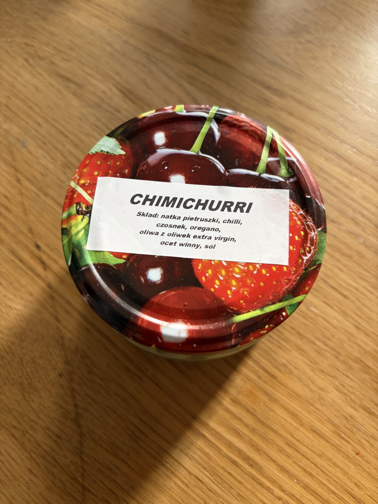

Riga Gold Cod Liver
Wątróbki z dorsza w tłuszczu własnym — cod liver in own fat. Latvian brand, Icelandic production.
What It Is
Cod liver — the nutrient-dense organ of Atlantic cod (Gadus morhua) — packed in its own rendered oil, a Latvian-brand delicacy produced from Icelandic cod. Riga Gold has built a reputation as one of the premium Baltic/Scandinavian conservas houses. The 121g tin contains whole or nearly-whole cod liver lobes suspended in their own golden fat, lightly salted, with no preservatives or additives beyond salt.
Quality markers: The liver should appear as intact, plump lobes or large pieces — not pulverized. The oil must be brilliant gold, clear, and fluid at room temperature. Aroma should be marine-buttery, faintly livery but clean, never rancid or "fishy" in the negative sense. Riga Gold sources from Icelandic fisheries, and the consistency between tins is notably high. Cloudy oil, grey liver tissue, or any graininess signals oxidation or poor handling.
Nutritional Profile
This is one of the most energy-dense foods you will handle in the pantry. Per 100g: approximately 620–650 kcal, 4–5g protein, 66–70g fat, of which 10–12g are saturated. Carbohydrates are effectively 0g. A realistic serving for an appetizer is 40–50g (roughly 2 tablespoons of liver plus oil), yielding 250–320 kcal and 26–35g fat.
The nutritional story here is micronutrients: vitamin A (retinol) at extraordinary levels — a single 50g serving can deliver 200–300% of daily needs. Vitamin D is similarly abundant. Omega-3 fatty acids (EPA/DHA) are present in meaningful quantities, though the total volume of liver consumed is usually modest. Cholesterol is high (~180mg per 50g). Sodium is moderate: ~300–400mg per 100g. Think of this as a supplemental luxury — small amounts, intense nourishment.
Preparation & Service
Serve cool to lightly chilled, never heated. The liver is already cooked during canning; reheating destroys the delicate lobe structure and drives off volatile aromatic compounds.
1. Open the tin carefully. The oil is liquid gold — preserve every drop. If the tin has been stored in a cool larder, the fat may have begun to solidify into a soft cream. This is fine; let it sit at room temperature for 15–20 minutes until it returns to fluid gold.
2. Lift the liver gently. Use a small spoon or offset spatula. The lobes are fragile and will break if prodded. If they have already fragmented in transit, treat the tin as a "spread" rather than a "lobe" presentation.
3. Use the oil. Do not drain it off. The cod liver oil is integral to the experience and carries much of the flavor. Spoon it over the plate or bread alongside the liver.
4. What NOT to do: Do not cook, bake, broil, or fry. Do not blend into a mousse unless explicitly asked — the texture is the point. Do not pair with strong spices (cumin, curry, chili) that will mask the delicate marine-butter flavor. Do not serve with sweet accompaniments (jams, mostarda); the liver's slight bitterness needs acid and salt, not sugar.
Plating for VIP service: On a chilled plate or small slate, place one or two intact liver lobes off-center. Spoon a small pool of the oil around them, not over them. Add a geometric pile of paper-thin slices of raw white onion (or shallot, if milder) and a few cornichon halves. A tiny pile of flaky Maldon salt on the rim allows the guest to season to taste. Serve with thin, dark rye crisps or Swedish knäckebröd standing upright in a small holder. Garnish with dill fronds or chervil, never parsley (too grassy). Consider a tiny quenelle of horseradish cream or Dijon mustard as an optional accent.
Traditional & Modern Eating Context
In Latvia, Estonia, and across the Baltic states, cod liver on dark bread with onion is standard breakfast or supper fare — the region's answer to foie gras, democratically priced and universally available. It is also a holiday zakuska (appetizer spread) item, particularly at New Year and Easter.
For a VIP client, this is your Baltic foie gras — position it explicitly as such. It shares the unctuousness, the richness, the vitamin density, and the "small amount, big impact" service model. Serve it as an amuse-bouche on a demitasse spoon with a sliver of pickle and rye crumble, or as part of a Nordic charcuterie board with smoked fish, venison terrine, and fermented vegetables. The post-Soviet provenance adds narrative depth if the client appreciates terroir storytelling.
Flavor & Texture
Flavor: Extraordinarily rich and marine-buttery — the taste of cold, clean North Atlantic water rendered through organ meat. There is a faint, pleasant bitterness at the back of the palate (characteristic of all quality liver), balanced by the salt cure. The oil carries a subtle nutty, almost toasted quality when at room temperature. It is not fishy in the cheap-tuna sense; it is oceany in the way good oysters are oceany — a flavor of depth and cold.
Texture: Silken, custard-like, dissolving on the tongue with almost no chew. The exterior of the lobe is slightly firmer, giving way to a center that is pure velvet. The oil itself is fluid and coating, leaving a glossy film on the palate that is deeply satisfying. This is not a textural food in the sense of resistance or snap; it is a food of yield and melt.
Pairings & Composition
- Breads: Dark rye, Swedish crispbread, or Latvian rudzu maize (sourdough rye). The bread must be sturdy enough to support the oil without dissolving, but thin enough not to dominate the portion. Toast lightly; butter is unnecessary and redundant given the oil.
- Acid & Salt: Cornichons, pickled onion, fermented cucumber, capers, or a squeeze of lemon (used sparingly). Acid cuts the fat; salt amplifies the marine notes.
- Alliums: Raw white onion, paper-thin; scallion; or minced shallot. The sharpness resets the palate between bites.
- Heat: Mild horseradish cream, or a dot of strong Dijon mustard. Not wasabi — too aggressive.
- Wine / Spirits: Ice-cold vodka (Russian, Polish, or Baltic craft) is the absolute classic pairing — the spirit's neutrality and chill slice through the fat. If wine: a chilled fino or manzanilla sherry is ideal — the salinity dialogue is extraordinary. A very dry, mineral Champagne or Pet-Nat works for celebratory contexts. Avoid oaked whites and full-bodied reds entirely.
- Vegetables: Simple, cold, crisp: cucumber rounds, radish halves, celery hearts. No cooked vegetables — they muddy the purity.
- Specific dish idea: Baltic Trio — on a long rectangular plate, place three small portions in a row: (1) Riga Gold cod liver on a rye crisp with cornichon and dill; (2) cold-smoked salmon on rye with crème fraîche and salmon roe; (3) pickled herring on rye with raw onion and sour cream. Connect the three with a thin line of dill oil. Serve with a frozen shot glass of aquavit or vodka. This is a complete narrative of Baltic preservation traditions in one course.